เจาะแก่นธุรกิจ หาคูเมืองที่แท้จริง
บันทึกการเรียนวิเคราะห์หุ้น US เชิงลึก แบบลงมือทำ — เน้นพื้นฐานธุรกิจ ความทนทานของรายได้ และทิศทางของกำไร ไม่ใช่ราคาหรือข่าวระยะสั้น
ที่นี่ไม่ใช่ที่บอกว่า "ซื้อตัวไหนดี" แต่เป็นที่ผมหัดอ่านธุรกิจให้เป็น ทีละบริษัท ทีละงบ ด้วยกรอบคิดสาย Fundamental — moat, Owner Earnings, ROIC และที่สำคัญที่สุดคือ "อะไรจะทำให้ผมรู้ว่าคิดผิด" (Kill Conditions) ทุกบทเขียนแบบเปิดเผยกระบวนการคิด ผิดถูกว่ากันตามหลักฐาน
บทความ
-
ผ่าธุรกิจ AAPL (Apple) — Services flywheel, ecosystem lock-in และเครื่องเก็บค่าเช่าที่ใหญ่ที่สุดในโลก
ไม่ใช่แค่บริษัทขายมือถือ — iPhone คือประตูสู่ ecosystem ที่เก็บ Services margin 75% จากฐานเครื่องพันล้านเครื่องที่ย้ายค่ายยาก บทนี้วาดตัว product จริง ผ่า App Store เก็บค่าเช่ายังไง เงินทุก $100 ไปไหน และแผงมอนิเตอร์ thesis (เน้นธุรกิจ ไม่ใช่ราคา)
 อ่านต่อ →
อ่านต่อ →
-
ผ่าธุรกิจ ASML — เครื่องพิมพ์แสงที่ผูกขาดโลกทั้งใบ แต่ราคาคือคำพนันปี 2030
ผู้ผลิตเครื่อง EUV รายเดียวในโลก — ส่วนแบ่งตลาด 100% ไม่ใช่ "เจ้าตลาด" แต่คือ "เจ้าเดียว" ที่ทำให้ TSMC/Samsung/Intel สร้างชิป 3 นาโนได้ รายได้ปี 2025 €32.7B (+15.6%) gross margin 52.8% net margin 29.4% บนเครื่องจักรหนักเป็นตัน + R&D €4.7B (14% ของยอด) ที่เป็นทั้งเกราะและภาระ — ผ่าฟิสิกส์ของการยิงเลเซอร์ใส่หยดดีบุก 50,000 ครั้ง/วินาทีให้เป็นพลาสมา 220,000°C, backlog €38.8B ที่ฟังดูใหญ่แต่เห็นอนาคตแค่ 1.2 ปีและยกเลิกได้, หลุมจีน 41%→29% ที่กำลังถูก export control ปิดวาล์ว, ลูกค้าจริงไม่ถึง 5 ราย และราคา $1,758 (P/E 62×, คืนเงินแค่ 1.2%/ปี) ที่จ่ายให้แผนโตเป็น 2 เท่าถึงปี 2030 (€44–60B) ไปแล้วเกือบเต็ม — เล่าด้วยภาพวาดของจริง: เครื่อง TWINSCAN, แหล่งกำเนิดแสง EUV, กรวยกลั่นกำไร, คิวลังเครื่องรอส่ง, ด่านศุลกากรกั้น EUV และตาชั่งราคา พร้อม Kill Conditions 6 ข้อ
 อ่านต่อ →
อ่านต่อ →
-
ผ่าธุรกิจ LMT (Lockheed Martin) — โรงงานอาวุธที่ backlog ยาว 2.6 ปี แต่กำไรมีแผลเปิด
โรงงานอาวุธที่ backlog $193.6B (+10%) ล็อกรายได้ล่วงหน้า 2.6 ปี — moat ระดับรัฐศาสตร์ switching cost 40–50 ปี แต่ขายให้ลูกค้ารายเดียว (รัฐบาลสหรัฐ) 72% ด้วยสัญญาล็อกราคา ~60% ของยอด และเพิ่งขาดทุนซ้ำสองปีติดบนโปรแกรมลับ $555M → $950M ที่บริษัทเตือนเองว่า "อาจมีอีก" จน EPS หายไป 22% ในสองปี ($27.55 → $21.49) ทั้งที่รายได้โตทุกปี — ผ่า 4 segment ที่กำลังสลับบทบาท: Aeronautics (F-35) margin ไหลลงสามปีติด 10.3% → 6.9% ขณะ MFC ขีปนาวุธโต +14% margin 13.8% เพราะคลังแสงทั้ง NATO ว่าง, การแพ้ NGAD ให้ Boeing จนไม่มีเครื่องบินรบยุคถัดไปในมือ, เครื่องจักรซื้อหุ้นคืนที่คืนเงิน 89% ของ FCF แต่มี Executive Order ขู่แขวน และราคา $521.82 (P/FCF 17.3×) ที่ตลาดจ่ายให้ "แผลจะปิด margin จะฟื้น" ไปแล้วครึ่งทาง — เล่าด้วยภาพเคลื่อนไหว ระดับ instrument: สายการผลิต F-35, คลังแสง backlog ที่มีประตูเบิกจ่ายบานเดียว, ห้องกล่องลับที่รั่วสีแดง และ HUD ล็อกเป้าราคา พร้อม Kill Conditions 6 ข้อที่วัดได้จาก filing รายไตรมาส
 อ่านต่อ →
อ่านต่อ →
-
ตอนที่ 0: ก่อนอ่านงบสักบรรทัด — งบคือรอยเท้า ไม่ใช่คะแนนสอบ
Mindset ที่ต้องติดตัวก่อนเปิดงบ: งบ 3 ชุดคือเรื่องเดียวกันเล่า 3 มุม — ตามกำไร $120B ของ NVIDIA ไหลครบ 3 งบจนตัวเลข tie-out เป๊ะ และเคส CleanSpark ที่ EPS +$1.12 แต่เงินสดจริงไหลออกปีละพันล้าน เพราะ "กำไร" ทั้งก้อนคือลูกโป่ง bitcoin
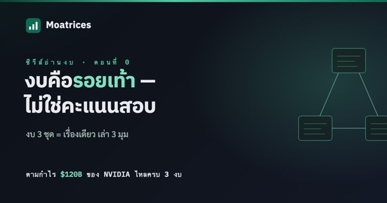
อ่านต่อ → -
ตอนที่ 1: งบกำไรขาดทุน — หอกลั่นรายได้ และรอยรั่วที่บอกว่าธุรกิจทนทานแค่ไหน
เขียนใหม่ด้วยตัวเลขจริงทั้งตอน: NVIDIA เทรายได้ $215.9B เข้าหอกลั่น เหลือหยดสุดท้าย $120B — backlog $11.4B ของ Synopsys vs เมฆฝนสองก้อน 36% ของ NVIDIA, margin สามทิศ (TSMC ↗ / NVDA ↘ / CELH →) และห้องแล็บ non-GAAP ของ Datadog ที่ SBC 21.9% ของรายได้ถูก "ขอไม่นับ"
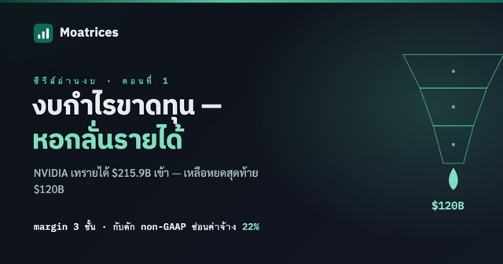
อ่านต่อ → -
ผ่าธุรกิจ AVGO (Broadcom) — เก็บค่าผ่านทาง AI สองขา และเดิมพัน $128B ที่เรดาร์มองเห็นแค่ FY28
เครื่องยนต์สองตัวที่นิสัยคนละขั้ว — custom XPU + Ethernet fabric ที่โต +143% กับ VMware เครื่องขึ้นราคา margin 78.7% — ผลิต FCF margin 42-46% บน capex แค่ 1% พร้อม backlog สัญญา $164.6bn แต่ในหกเดือน บริษัทเดียวกันเซ็น purchase commitments จาก $132M เป็น $128,110M และค้ำ lease ลูกค้า AI อีก $29bn — vendor financing loop ที่ 10-Q สารภาพเอง ขณะลูกค้ากระจุกผ่าน distributor รายเดียว 42% และราคาหุ้น price in FCF โต ~24%/ปีตลอดทศวรรษ ทั้งที่หลักฐานทุกชิ้นหมดอายุ FY28 — เล่าด้วยภาพเคลื่อนไหวระดับ instrument: ผ่าตัดขวาง XPU 2.5D package, leaf-spine fabric, ชั้น hypervisor, วงจรเงิน backstop และเรดาร์ visibility ที่ดับหลัง FY28 พร้อม Kill Conditions 5 ข้อที่วัดได้จาก filing รายไตรมาส
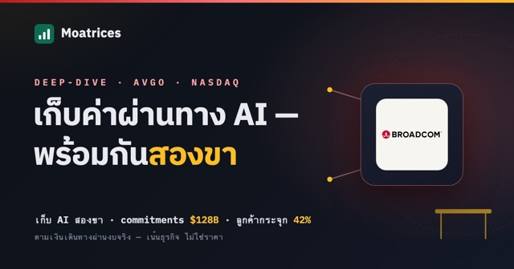
อ่านต่อ → -
AI = ฟองสบู่ dot-com รอบใหม่? — ผ่ากลไกด้วยมีดผ่าตัดเล่มเดิม
ตลาดที่คาดหวังกับ AI แบบนี้คล้าย dot-com bubble ไหม — และถ้าเป็นฟองสบู่จริง GPU ก็เอาไปทำอย่างอื่นได้ไม่ใช่เหรอ? บทนี้ใช้มีดผ่าตัดเล่มเดิมที่เคยกรีด dot-com มากรีด AI ทีละชั้น: ฟองสบู่คือตอนที่ราคากลายเป็นตัวอ้างอิงของตัวเอง (3 เงื่อนไข), วงจรเงินหมุน Nvidia→hyperscaler capex→AI cloud→VC labs ที่บังหน้าว่าไม่มี end-demand จริง, และจุดที่ AI แย่กว่า dot-com — fiber อยู่ 25 ปีเป็นของขวัญให้อนาคต แต่ GPU ตายใน 4-5 ปีคือสินทรัพย์ที่ละลาย คำตัดสิน: timing error กับ "ดอกจันโหดร้าย" ที่ว่า thesis ถูกแต่คนถือจะรอดไหม พร้อม falsifiability 2 ข้อ — เล่าด้วยภาพเคลื่อนไหวระดับ instrument: capital circuit เงินหมุนในวงปิด, scope วัดอายุสินทรัพย์ และ race ระหว่างนาฬิกา depreciation กับ demand ที่มาถึง (เรียบเรียงจากงานที่เขียนด้วย Claude Fable 5)
 อ่านต่อ →
อ่านต่อ →
-
ผ่าธุรกิจ MRVL (Marvell) — ชิป custom และการเชื่อมต่อความเร็วสูงที่ทำให้ AI ขยับ
fabless ที่ทำทั้ง "สมอง" และ "เส้นประสาท" ของศูนย์ข้อมูล AI — custom XPU เร่งงาน AI, SerDes 224G (PAM4), Ethernet switch 51.2T และ optical DSP ที่แปลงบิตเป็นแสง รายได้พุ่ง +42% สู่ $8.2bn, data center 76% ของรายได้, GAAP gross margin พลิก 41%→52% และ operating income พลิกบวก แต่ใต้คลื่น AI ที่จริงนั้น ROIC ~6% ยังต่ำกว่าต้นทุนทุน ~11% และ goodwill = 52% ของสินทรัพย์ (serial acquirer: Cavium/Inphi/Celestial/XConn) — เล่าด้วยภาพเคลื่อนไหวระดับ instrument ของผลิตภัณฑ์จริง: ผังชิป custom XPU, eye diagram PAM4, crossbar ของ switch และ optical DSP ส่งแสง
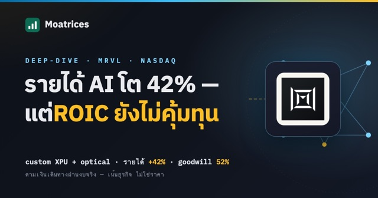
อ่านต่อ → -
ผ่าธุรกิจ MU (Micron) — โรงงานความจำของยุค AI ในวัฏจักรที่โหดที่สุด
ผู้ผลิตความจำ DRAM/NAND สัญชาติสหรัฐรายเดียว — ขาย "บิต" ที่เป็น commodity, oligopoly 3 ราย + กำแพงทุนที่ฆ่าคู่แข่งจาก 20+ เหลือ 3, เดิมพัน HBM (DRAM ซ้อน 12 ชั้น + TSV) กับยุค AI ที่จองเต็มถึงปี 2027 และวัฏจักรที่ gross margin เหวี่ยงจากขายขาดทุน (FY2023) ถึง 40% (FY2025) อ้างอิงงบ FY2025: รายได้ $37.4bn (+49%), DRAM $28.6bn, GM พลิก 22%→40% — เล่าด้วยภาพเคลื่อนไหวระดับ instrument: DRAM cell, HBM stack + TSV, memory cycle
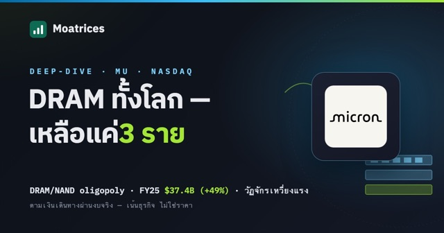
อ่านต่อ → -
ผ่าธุรกิจ SPGI (S&P Global) — Toll Booth สองชั้นบนระบบการเงินโลก
S&P Global เก็บ "ค่าผ่านทาง" จากระบบการเงินโลก — เป็นเจ้าของเครดิตเรตติ้งที่แทบทุกพันธบัตรต้องใช้ (duopoly กับ Moody's, margin 64%) และเจ้าของดัชนี S&P 500 ที่เก็บค่าลิขสิทธิ์ตาม AUM ของ passive fund (margin 71%) อ้างอิงงบจริง FY2024–FY2025: รายได้ $15.3bn, adj. EPS $17.83, Dividend King 52 ปี เจาะ 5 segment, rating scale + duopoly, index royalty, revenue stack ที่เผยส่วน cyclical และ Kill Conditions อธิบายด้วยภาพเคลื่อนไหวระดับ instrument
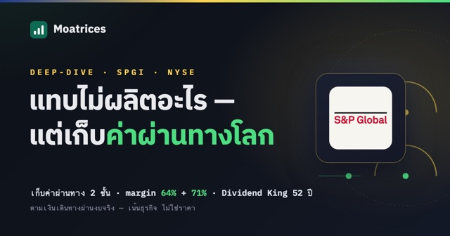
อ่านต่อ → -
ผ่าธุรกิจ UNH (UnitedHealth) — เครื่องจักรประกันที่ผูกครบวงจร (และปีที่มันสะดุด)
บริษัทประกันสุขภาพหาเงินจาก "ส่วนต่าง" ที่บางมาก — ทำไมการเป็นทั้ง payer + Optum (provider/PBM/data) ครบวงจรถึงเป็นคูเมือง อ้างอิงงบจริง FY2024–FY2025: รายได้ $447.6bn แต่ MLR พุ่งเป็น 88.9% ฉุด adj. EPS ร่วงเหลือ $16.4 (−41%) เล่าด้วยภาษาภาพคลินิก — จอ vital-signs (MLR คือชีพจร), เครือข่ายการดูแล, ระบบหมุนเวียนเลือด (เงิน/ข้อมูล), risk pool, trend monitor การ reset 2024–2025 และแผนภูมิอาการ (DOJ + ไซเบอร์)
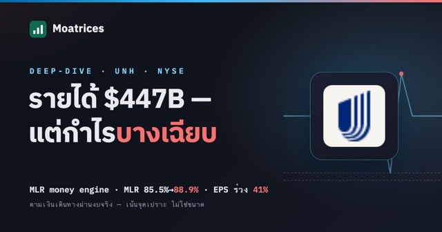
อ่านต่อ → -
ผ่าธุรกิจ MSFT (Microsoft) — 3 เครื่องยนต์, Azure และเดิมพัน AI
รายได้ $281.7B กระจาย 3 เครื่องยนต์ — Azure (+34%), ecosystem lock-in ที่องค์กรย้ายหนียาก, Copilot ที่วาง AI ทับฐานลูกค้าเดิม, cash flywheel และจุดเปราะเรื่องเดิมพัน AI capex อธิบายด้วยภาพเคลื่อนไหว
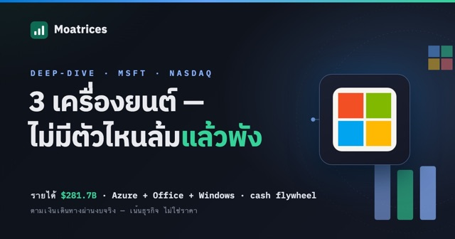
อ่านต่อ → -
Deep-dive · หุ้นจริงผ่าธุรกิจ LLY (Eli Lilly) — ยาฉีดลดน้ำหนักที่กลายเป็นเครื่องจักรเงิน
 LLY
~15 นาที
LLY
~15 นาที
ยา GLP-1 (Mounjaro/Zepbound) ทำงานยังไงถึงคุมทั้งน้ำหนักและน้ำตาล — กลไกระดับเซลล์, คูเมืองการผลิต peptide, pipeline, TAM โรคอ้วน, patent cliff และจุดเปราะเรื่องการกระจุก 56% อธิบายด้วยภาพเคลื่อนไหว
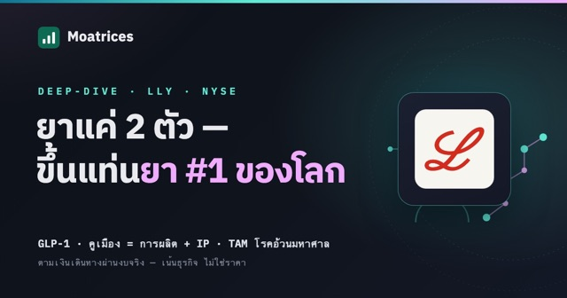
อ่านต่อ → -
ผ่าธุรกิจ SpaceX — "ใช้จรวดซ้ำ" ที่เปลี่ยนเศรษฐศาสตร์ของอวกาศ
ทำไมการเอา booster กลับมาใช้ซ้ำ (จับด้วย Mechazilla) ถึงเปลี่ยนเกมต้นทุนอวกาศทั้งอุตสาหกรรม — คูเมือง $/kg, Starlink, launch dominance, Starship และความเสี่ยงของบริษัทเอกชน อธิบายด้วยภาพเคลื่อนไหว
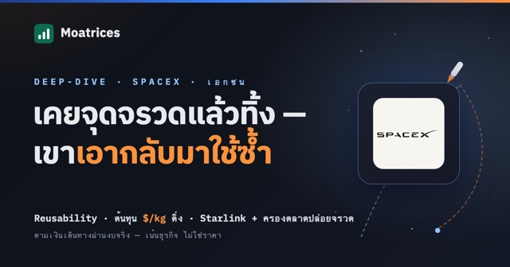
อ่านต่อ → -
ผ่าธุรกิจ GOOGL (Alphabet) — เครื่องโฆษณาที่ซ่อนคูเมือง "data" และเดิมพัน AI
Google หาเงินจาก "ความตั้งใจซื้อ" ของคุณยังไง — ad auction แบบ real-time, reach ผลิตภัณฑ์ 1B+ users, คูเมือง intent-data, Google Cloud + Gemini/TPU, Waymo และจุดเปราะเรื่อง AI search + DOJ อธิบายด้วยภาพเคลื่อนไหว
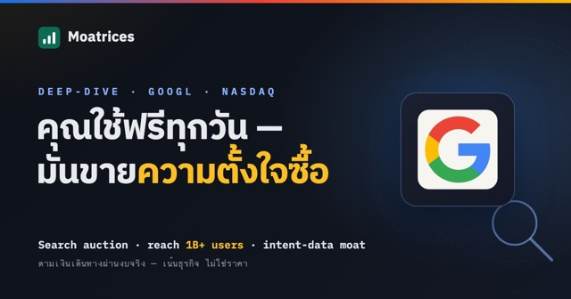
อ่านต่อ → -
Deep-dive · หุ้นจริงผ่าธุรกิจ NVDA (NVIDIA) — GPU, คูเมือง CUDA และการขาย "โรงงาน AI"
 NVDA
~14 นาที
NVDA
~14 นาที
ทำไมโลก AI ขาด GPU ของ NVIDIA ไม่ได้ — ประมวลผลขนาน, คูเมืองซอฟต์แวร์ CUDA, การเชื่อม GPU พันตัวเป็น "โรงงาน AI" (NVLink) และจุดเปราะเรื่อง custom chip + valuation อธิบายด้วยภาพเคลื่อนไหว
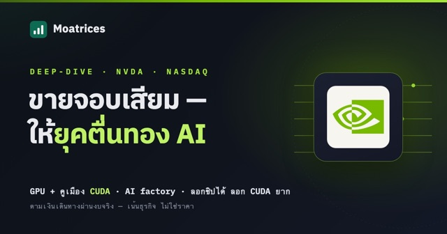
อ่านต่อ → -
ผ่าธุรกิจ COHR (Coherent) — ทำไม AI ต้องส่งข้อมูลด้วย "แสง"
คอขวดของ AI คือการย้ายข้อมูลระหว่างชิป — ทองแดงไปไม่ไหว ต้องใช้แสง อธิบายเทคโนโลยี optical (IMDD/coherent, SiPh, InP PIC, TFLN) ด้วยภาพเคลื่อนไหว
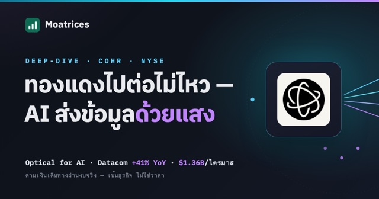
อ่านต่อ → -
4 เสาหลักความคิดการลงทุนของ Warren Buffett
4 หนังสือที่หล่อหลอมความคิดนักลงทุนที่ยิ่งใหญ่ที่สุด — Security Analysis, Intelligent Investor, Wealth of Nations, Essays of Buffett: ใจความสำคัญแต่ละเล่ม + ลำดับการอ่านสำหรับมือใหม่
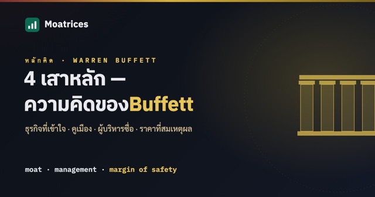
อ่านต่อ → -
Deep-dive · หุ้นจริงผ่าธุรกิจ TSM (TSMC) — โรงหล่อของโลก AI, คูเมืองที่ลอกไม่ได้ และหางเสี่ยงชื่อ Taiwan
 TSM
~14 นาที
TSM
~14 นาที
foundry ผูกขาด leading-edge (≤7nm 74%), ROIC ~48%, operating leverage มหาศาล — toll bridge ของยุค AI แต่ถือหางเสี่ยง Taiwan ที่ hedge ไม่ได้
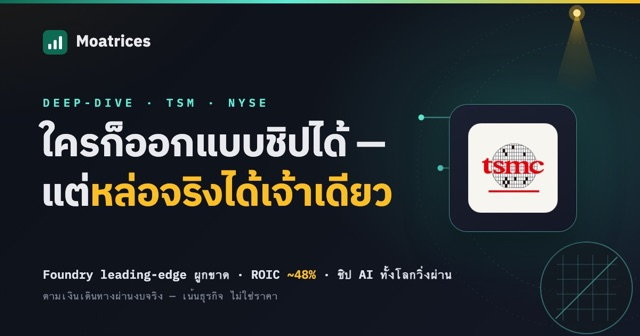
อ่านต่อ → -
Deep-dive · หุ้นจริงผ่าธุรกิจ NFLX (Netflix) — operating leverage สวยงาม แต่ moat เปราะสุดในกลุ่ม
 NFLX
~12 นาที
NFLX
~12 นาที
scale economy ของ content (op margin 20.6%→29.5%), ขาโฆษณาใหม่ และจุดเปราะ — ไม่ capital-light + switching cost ต่ำ + ราคาแพง
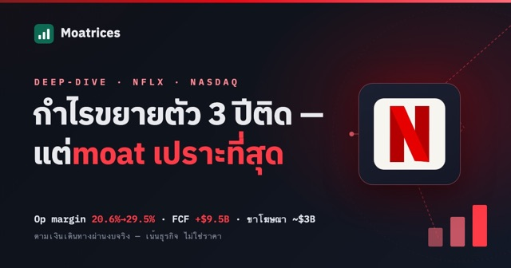
อ่านต่อ → -
Deep-dive · หุ้นจริงผ่าธุรกิจ MELI (MercadoLibre) — โตเร็วที่สุด แต่ margin กำลังร่วง
 MELI
~14 นาที
MELI
~14 นาที
ecosystem e-commerce + fintech ของลาตินอเมริกา; รายได้ +49% แต่ op margin ร่วงเหลือ 6.9% — โตด้วยสินเชื่อ จะเป็นกำไรยั่งยืนไหม
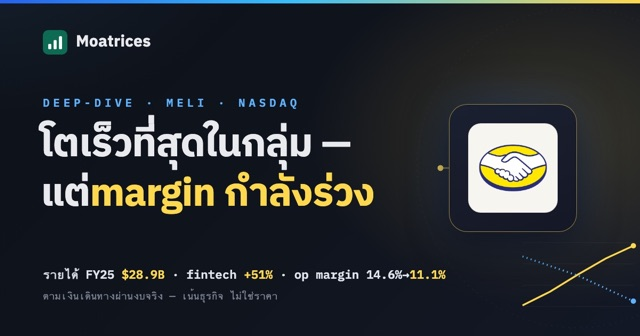
อ่านต่อ → -
Deep-dive · หุ้นจริงผ่าธุรกิจ COST (Costco) — ทำเงินจาก "ค่าสมาชิก" ไม่ใช่จากของที่ขาย
 COST
~14 นาที
COST
~14 นาที
โมเดลที่กลับหัว — ขายของแทบไม่เอากำไร ทำเงินจากค่าสมาชิกที่ต่ออายุ ~90%; flywheel, moat และจุดเปราะเรื่อง valuation ที่แพง
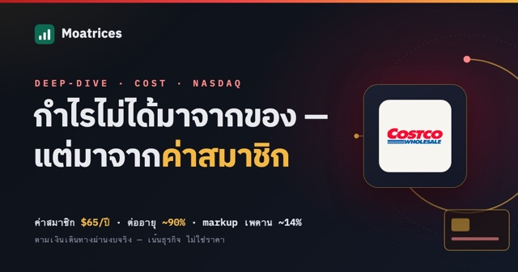
อ่านต่อ → -
Deep-dive · หุ้นจริงผ่าธุรกิจ SNPS (Synopsys) — EDA duopoly, ดีล Ansys $35B และความหวัง Physical AI
 SNPS
~14 นาที
SNPS
~14 นาที
ธุรกิจดีกลางเดิมพันใหญ่ — ตามเงิน ฿100 เดินทางผ่านงบ, ดีเบต 3 ยกของตลาด และแผงมอนิเตอร์ 5 สัญญาณว่า thesis ห่างเส้นแดงแค่ไหน
 อ่านต่อ →
อ่านต่อ →
-
Deep-dive · หุ้นจริงผ่าธุรกิจ AXP (American Express) — โมเดล "spend-centric" กับคูเมืองที่คนมองข้าม
 AXP
~15 นาที
AXP
~15 นาที
closed-loop network, รายได้จากการใช้จ่ายไม่ใช่ดอกเบี้ย, moat, bull/bear และ Kill Conditions — อ้างอิงงบ FY2025 + Q1 2026
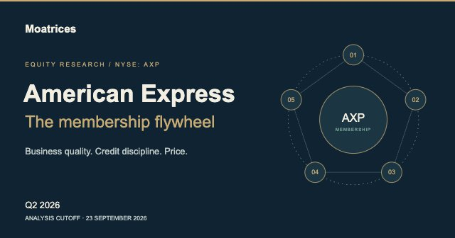
อ่านต่อ → -
ตอนที่ 3: งบดุล + เชื่อม 3 งบ — ฐานะ ณ วันนี้ และภาพใหญ่ที่ครบ
อ่านงบดุล แล้วเอางบทั้ง 3 ชุดมาต่อกันด้วยตัวเลขที่ tie-out จริง — กำไร→กำไรสะสม, working capital→เงินสด, เงินสดปลายงวด→งบดุล
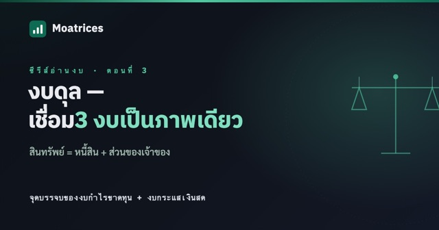
อ่านต่อ → -
ตอนที่ 2: งบกระแสเงินสด — "กำไรคือความเห็น เงินสดคือความจริง"
เคสคลาสสิก "กำไรบวกแต่เงินสดติดลบ" และกฎเช็คคุณภาพกำไรว่า CFO วิ่งตามกำไรหรือไม่
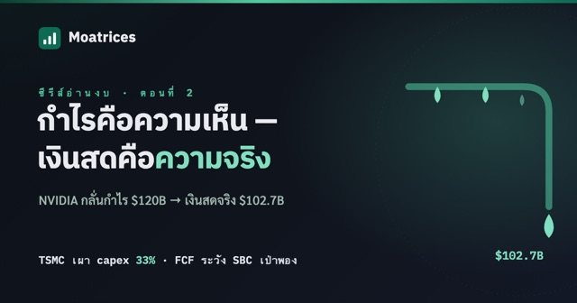
อ่านต่อ →